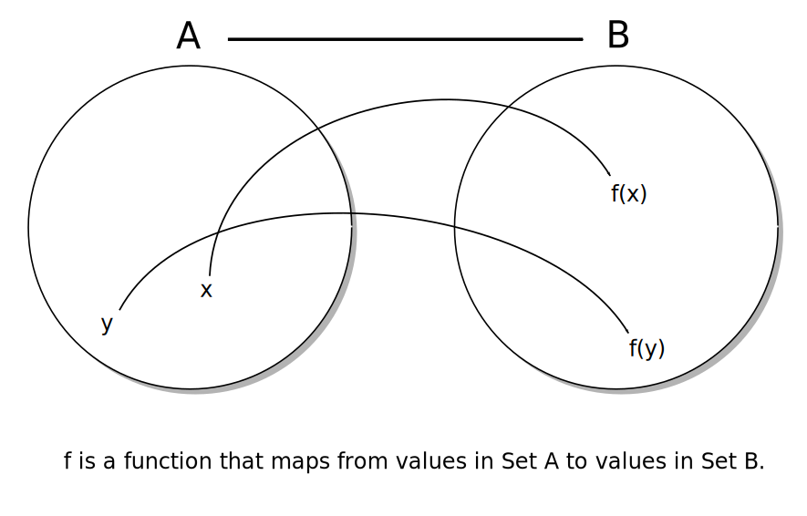

What do functional languages teach us? How does learning one change the way we write Python?
Created by Crispin Wellington
A university professor went to visit a famous Zen monk. While the monk quietly served tea, the professor talked about Zen. The monk poured the visitor's cup to the brim, and then kept pouring.
The professor watched the overflowing cup until he could no longer restrain himself.
“It's overfull! No more will go in!” the professor blurted.
“You are like this cup,” the monk replied, “How can I show you Zen unless you first empty your cup.”
Lisp is a family of languages recognised by their unique syntax, heavily influenced by lambda calculus and where source code is comprised of lists.
(println “Hello, world!”)
(print “What is your name? ”)
(let [name (read-line)]
(println “Hello, ” name “! My name is John McCarthy.”))
Lisp was invented by John McCarthy in 1958. It is a pioneering language that invented things like:
Clojure is a modern Lisp variant written by Rich Hickey that produces compiled artifacts that run on the Java Virtual Machine, the Common Language Runtime or on Javascript engines, including in the browser.
Functional programming is programming in a style that favours (pure) functions over other constructs.
In mathematics, a function is a relation between a set of inputs and a set of permissible outputs with the property that each input is related to exactly one output.
-- Wikipedia
A simple function that maps a number to its square:
In Haskell:
square :: Int -> Int
square x = x * x
In Clojure:
(defn square [x]
(* x x))
In Python:
def square(x):
return x*x
A function is pure if both:
The function always evaluates to the same output value given the same values for its input arguments.
and:
Evaluation of the result does not cause any semantically observable side effect or output, such as mutation of mutable objects or output to I/O devices.
In functional programming we want to use pure functions. ie. They take values, only operate on those parameters, don't mutate state, and return a value to the caller
| Function Call | Pure or Impure? |
|---|---|
| +, -, /, * | Pure |
| len(mystring) | Pure |
| math.sqrt(mynum) | Pure |
| random() | Impure |
| sorted(mylist) | Pure |
| mylist.sort() | Impure |
| myfile.read() | Impure |
| datetime.today() | Impure |
| mylist.append(myval) | Impure |
| list1 + list2 | Pure |
Takes a function and a collection. Evaluates the function, passing in every item in the collection. Takes all the return values of those calls and returns them in a new collection.
map(f, coll)
[f(x) for x in coll]
{f(x):g(x) for x in coll}
{f(k):g(v) for k,v in coll.items()}
(f(x) for x in coll)
Imperative code like this:
output = []
for word in ['this', 'is', 'a', 'list', 'of', 'words']:
output.append(len(word))
print output
output = {}
for word in ['this', 'is', 'a', 'list', 'of', 'words']:
output[word] = len(word)
print output
Can be expressed functionally like this:
>>> map(len, ['this', 'is', 'a', 'list', 'of', 'words'])
[4, 2, 1, 4, 2, 5]
>>> [len(word) for word in ['this', 'is', 'a', 'list', 'of', 'words']]
[4, 2, 1, 4, 2, 5]
>>> {word:len(word) for word in ['this', 'is', 'a', 'list', 'of', 'words']}
{'a': 1, 'this': 4, 'of': 2, 'is': 2, 'list': 4, 'words': 5}
Takes a collection and returns a new collection containing only those items from the first that pass some test.
filter(pred, coll)
[x for x in coll if x=='foo']
[x for x in coll if pred(x)]
{k:v for k,v in coll.items() if pred(k,v)}
Imperative code like this:
output = []
for word in ['this', 'is', 'a', 'list', 'of', 'words']:
if len(word)==4:
output.append(word)
print output
Can be expressed functionally like this:
>>> filter(lambda word: len(word)==4, ['this', 'is', 'a', 'list', 'of', 'words'])
['this', 'list']
>>> [word for word in ['this', 'is', 'a', 'list', 'of', 'words'] if len(word)==4]
['this', 'list']
Consume all the items in a collection by passing them in turn to a function. That function gets passed the item being consumed, as well as the result of the last function call performed by reduce. In this way a collection of items are fed through a function that reduces them to one output value.
Reduce optionally takes an initial argument that will be used in the first call to the function. If this is not specified, the first call is passed two items from the start of the collection.
def func(accumulator, element):
return ...
reduce(func, coll)
reduce(func, coll, initial_value)>>> def f(a,b):
... print "f called with:", a, b
... return a+b
...
>>> reduce(f, range(10))
f called with: 0 1
f called with: 1 2
f called with: 3 3
f called with: 6 4
f called with: 10 5
f called with: 15 6
f called with: 21 7
f called with: 28 8
f called with: 36 9
45
>>> def reverser(a,b):
... print "reverser called with:", a, b
... return [b] + a
...
>>> reduce(reverser, [1, 4, 9, 16, 25], [])
reverser called with: [] 1
reverser called with: [1] 4
reverser called with: [4, 1] 9
reverser called with: [9, 4, 1] 16
reverser called with: [16, 9, 4, 1] 25
[25, 16, 9, 4, 1]
>>> coll = [-20, 10, 100, -43, 35]
>>> reduce(lambda a,b: a if a < b else b, coll)
-43
>>> reduce(lambda a,b: a if a > b else b, coll)
100
>>> reduce(min, coll)
-43
>>> reduce(max, coll)
100
>>> min(coll)
-43
>>> max(coll)
100
A function is said to be of a “higher order” if it takes another function as one of its aguments, or returns a function as part of it's result, or both.
map(function, coll)
filter(function, coll)
reduce(function, coll)
Python decorators are functions. They get invoked during compilation and into them is passed the function that is to be decorated. They return a new function that is to replace the old one in the namespace.
def debug(fn):
def new_func(*args, **kwargs):
result = fn(*args, **kwargs)
print "{} called with args: {} and kwargs: {} and returned: {}".format(fn.__name__, args, kwargs, result)
return result
return new_func
@debug
def solve_quadratic(a, b, c):
sqrt_b2_minus_4ac = math.sqrt(
b * b - 4 * a * c
)
return (
(- b + sqrt_b2_minus_4ac) / (2 * a),
(- b - sqrt_b2_minus_4ac) / (2 * a)
)
result = solve_quadratic(10, 2, 4)
running it looks like:
$ python test.py
solve_quadratic called with args: (10, 2, -4) and kwargs: {} and returned: (0.5403124237432848, -0.7403124237432849)
result = (0.5403124237432848, -0.7403124237432849)
Q: If I can't change anything, how can I do anything? How can I model change at all?
A: By building new things that are the same as the old things, but with slight differences
We call these immutable things Values.
A particular magnitude, number or amount. A Precise meaning or significance.
Real numbers? yes
None? yes
Booleans? yes
Tuple? yes
Datetime? yes
String? yes
List? no
Dictionary? no
Set? no
Generator instances? no
Class instance? depends (usually no)
Class? no
Module? no
If your code is based on values you can:
If you could design a language from scatch that didn’t need a GIL you would probably design a language without mutable objects. Or you’d limit the mutability to a small number of specific object types rather than making pretty much everything mutable, from modules to classes to instances to dictionaries to lists.
-- Guido van Rossum (Europython 2015 keynote)
That would not be Python
-- Someone in the Audience [Shouting]
You’re taking the words right out of my mouth
-- Guido van Rossum
You cannot step in the same river twice, for you are not the same person and it is not the same river.
-- Heraclitus of Ephesus (c. 535 - c. 475 BCE)
We love this idea of objects, like there’s this thing that changes. There’s no river. There’s water there at one point-in-time. And another point-in-time, there’s other water there. River... it’s all in here [points at head]
-- Rich Hickey